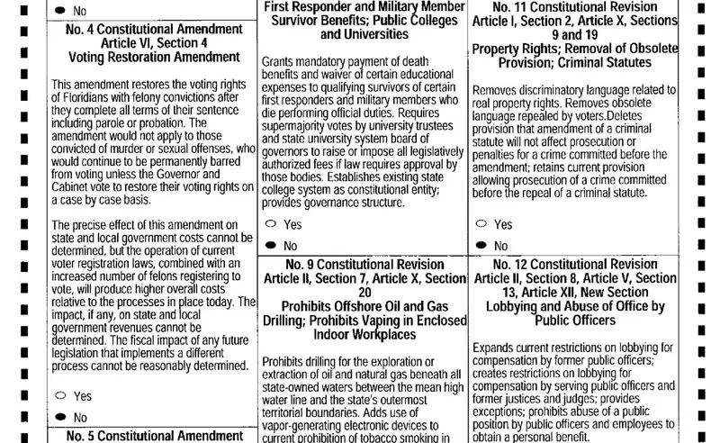
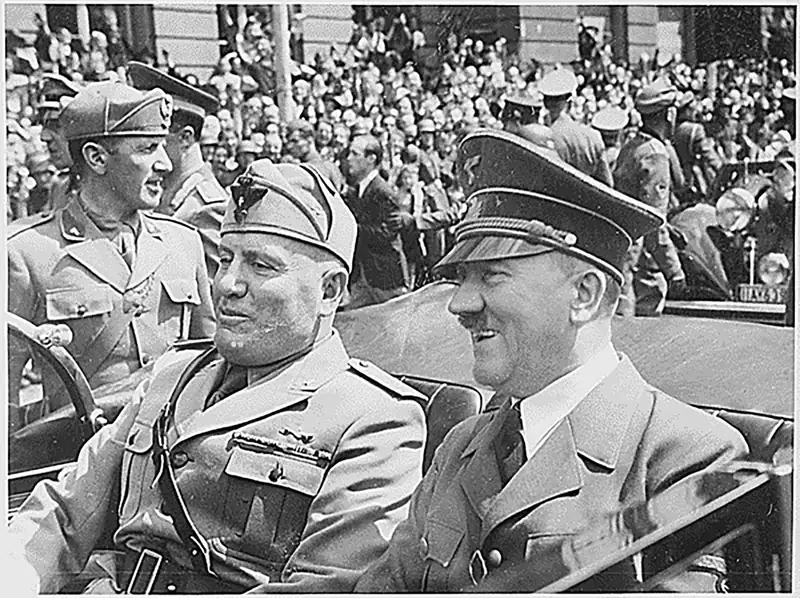
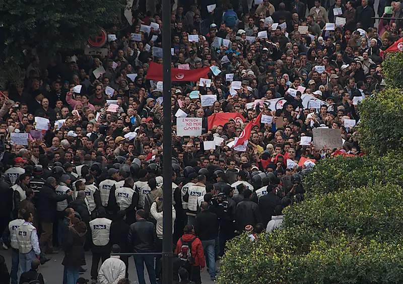
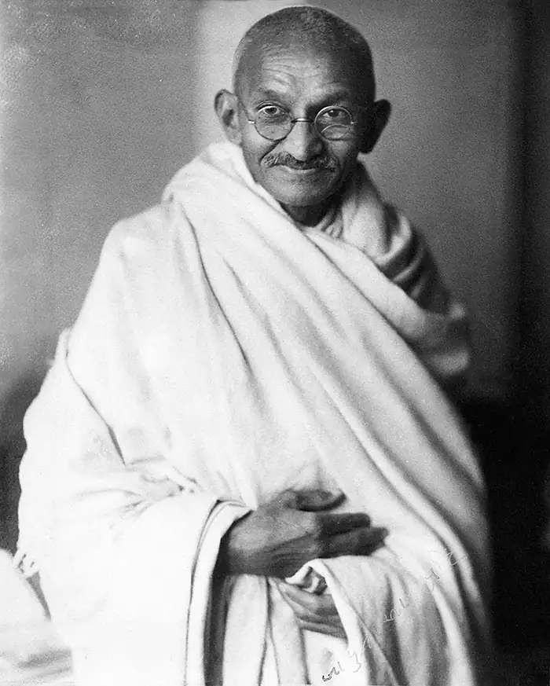
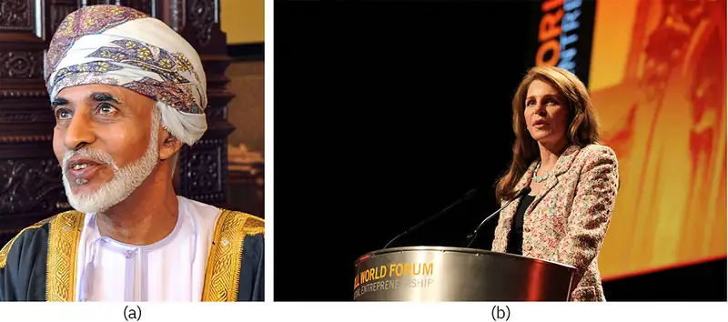
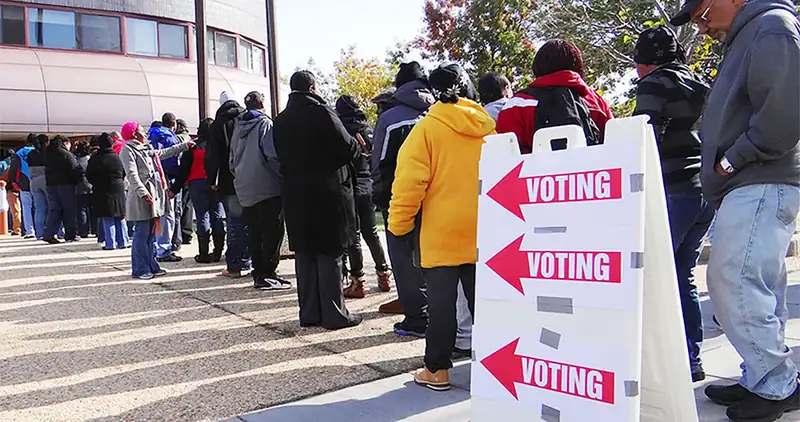
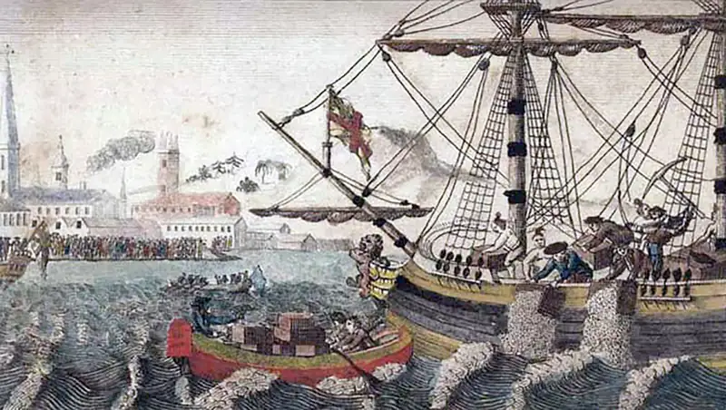

Chapter 17: Government and Politics¶
Introduction¶

On November 6, 2018, Florida residents voted overwhelmingly to restore voting rights to people convicted of most felonies after they had completed their sentences. Rather than undergoing the complex process of passing a law through legislative representatives, the people voted directly on the matter as part of their ballot, a process typically referred to as a referendum. The two-thirds majority in favor of the referendum seemed to make the voters' intention clear, but their intentions would not be carried as directly as they thought.
Many believe that voting is a privilege to be granted to "upstanding" citizens. The 14th Amendment gives government the right to restrict voting for those who have "participated in rebellion or other crime." As of 2021, 48 states had some type of restrictions for people with felony convictions, though the vast majority of those permit people to vote upon completion of their sentence (ACLU 2021). At the time of the 2018 referendum, Florida had almost 1.7 million people unable to vote due to felony convictions, which was roughly ten percent of its total population; to put it another way, Florida had more disenfranchised people than any other state (Lewis 2018). Many statewide Florida elections are decided by only a few percentage points. For example, the last three elections for governor were decided by less than two percent of the vote.
Disenfranchisement laws affect people of certain races, ethnicities, and socioeconomic status more significantly than other groups. For example, in Florida, 23 percent of Black people were unable to vote because of felony convictions (Brennan Center 2020).
Despite the overwhelming majority of citizens who supported the change, the Florida governor and legislature effectively blocked the referendum's implementation. In early 2019, less than two weeks after the resolution went into effect, the government passed a law indicating that voting would only be allowed for convicted felons who served their sentences and had also paid all fines and penalties owed to the state. The effect was significant: Fines associated with sentences can be quite large, and people with felony convictions have major issues with employment. The law severely diminished the referendum's effect. By the time of the 2020 Presidential election, about 700,000 people with felony convictions, who had served their sentences, still could not vote.
Many in Florida felt that their referendum clearly indicated the people's choice, and their power had been taken. On the other hand, the legislators indicated that they were obtaining money owed to the state, and that the brief, 140-word referendum didn't specify the method of implementation. Florida is going through a conflict that has faced the nation from its earliest days: Who has the right to make decisions? Who has the power?
At its core, government may be understood as the institutionalized system through which a society organizes itself and regulates its collective life. It constitutes the formal mechanism for decision-making regarding the allocation of resources, the enforcement of legal norms, and the safeguarding of individual rights. In this capacity, government functions as the administrative authority charged with formulating, implementing, and upholding the policies, laws, and regulations that structure social behavior and interaction.
From a sociological perspective, government is not reducible to the individuals who temporarily occupy positions of power. Rather, it represents a durable system of authority sustained by a complex constellation of institutions, structures, and practices through which power is exercised, legitimacy is maintained, and social order is reproduced.
17.1 Power and Authority¶
Learning Objectives
By the end of this section, you should be able to:
- Define and differentiate between power and authority
- Identify and describe the three types of authority
The world has almost 200 countries. Many of those countries have states or provinces with their own governments. In some countries such as the United States and Canada, Native Americans and First Nations have their own systems of government in some relationship with the federal government. Just considering those thousands of different entities, it's easy to see what differentiates governments. What about what they have in common? Do all of them serve the people? Protect the people? Increase prosperity?
The answer to those questions might be a matter of opinion, perspective, and circumstance. However, one reality seems clear: Something all governments have in common is that they exert control over the people they govern. The nature of that control—what we will define as power and authority—is an important feature of society.
Sociologists have a distinctive approach to studying governmental power and authority that differs from the perspective of political scientists. For the most part, political scientists focus on studying how power is distributed in different types of political systems. They would observe, for example, that the United States’ political system is divided into three distinct branches (legislative, executive, and judicial), and they would explore how public opinion affects political parties, elections, and the political process in general. Sociologists, however, tend to be more interested in the influences of governmental power on society and in how social conflicts arise from the distribution of power. Sociologists also examine how the use of power affects local, state, national, and global agendas, which in turn affect people differently based on status, class, and socioeconomic standing.
What Is Power?¶

For centuries, philosophers, politicians, and social scientists have explored and commented on the nature of power. Pittacus (c. 640–568 B.C.E.) opined, “The measure of a man is what he does with power,” and Lord Acton perhaps more famously asserted, “Power tends to corrupt; absolute power corrupts absolutely” (1887). Indeed, the concept of power can have decidedly negative connotations, and the term itself is difficult to define.
Many scholars adopt the definition developed by German sociologist Max Weber, who said that power is the ability to exercise one’s will over others (Weber 1922). Power affects more than personal relationships; it shapes larger dynamics like social groups, professional organizations, and governments. Similarly, a government’s power is not necessarily limited to control of its own citizens. A dominant nation, for instance, will often use its clout to influence or support other governments or to seize control of other nation states. Efforts by the U.S. government to wield power in other countries have included joining with other nations to form the Allied forces during World War II, entering Iraq in 2003 to topple Saddam Hussein’s regime, and imposing sanctions on the government of North Korea in the hopes of constraining its development of nuclear weapons.
Endeavors to gain power and influence do not necessarily lead to violence, exploitation, or abuse. Leaders such as Martin Luther King Jr. and Mohandas Gandhi, for example, commanded powerful movements that effected positive change without military force. Both men organized nonviolent protests to combat corruption and injustice and succeeded in inspiring major reform. They relied on a variety of nonviolent protest strategies, such as rallies, sit-ins, marches, petitions, and boycotts.
Modern technology has made such forms of nonviolent reform easier to implement. Often, protesters can use cell phones and the Internet to disseminate information and plans to masses of protesters in a rapid and efficient manner. Some governments like Myanmar, China, and Russia tamp down communication and protest through platform bans or Internet blocks (see the Media and Technology chapter for more information). But in the Arab Spring uprisings of 2010-11, for example, Twitter feeds and other social media helped protesters coordinate their movements, share ideas, and bolster morale, as well as gain global support for their causes. Social media was also important in getting accurate accounts of the demonstrations out to the world, in contrast to many earlier situations in which government control of the media censored news reports. Notice that in these examples, the users of power were the citizens rather than the governments. They found they had power because they were able to exercise their will over their own leaders. Thus, government power does not necessarily equate to absolute power.

Big Picture: Social Media as a Terrorist Tool
British aid worker, Alan Henning, was the fourth victim of the Islamic State (known as ISIS or ISIL) to be beheaded before video cameras in a recording titled, “Another Message to America and Its Allies,” which was posted on YouTube and pro-Islamic state Twitter feeds in the fall of 2014. Henning was captured during his participation in a convoy taking medical supplies to a hospital in conflict-ravaged northern Syria. His death was publicized via social media, as were the earlier beheadings of U.S. journalists Jim Foley and Steven Sotloff and British aid worker David Haines. The terrorist groups also used social media to demand an end to intervention in the Middle East by U.S., British, French, and Arab forces.
An international coalition, led by the United States, has been formed to combat ISIS in response to this series of publicized murders. France and the United Kingdom, members of the North Atlantic Treaty Organization (NATO), and Belgium are seeking government approval through their respective parliaments to participate in airstrikes. The specifics of target locations are a key point, however, and they emphasize the delicate and political nature of current conflict in the region. Due to perceived national interest and geopolitical dynamics, Britain and France are more willing to be a part of airstrikes on ISIS targets in Iran and likely to avoid striking targets in Syria. Several Arab nations are a part of the coalition, including Bahrain, Jordan, Saudi Arabia, Qatar, and the United Arab Emirates. Turkey, another NATO member, has not announced involvement in airstrikes, presumably because ISIS is holding forty-nine Turkish citizens hostage.
U.S. intervention in Libya and Syria is controversial, and it arouses debate about the role of the United States in world affairs, as well as the practical need for, and outcome of, military action in the Middle East. Experts and the U.S. public alike are weighing the need for fighting terrorism in its current form of the Islamic State and the bigger issue of helping to restore peace in the Middle East. Some consider ISIS a direct and growing threat to the United States if left unchecked. Others believe U.S. intervention unnecessarily worsens the Middle East situation and prefer that resources be used at home rather than increasing military involvement in an area of the world where they believe the United States has intervened long enough.
Types of Authority¶
The protesters in Tunisia and the civil rights protesters of Martin Luther King, Jr.’s day had influence apart from their position in a government. Their influence came, in part, from their ability to advocate for what many people held as important values. Government leaders might have this kind of influence as well, but they also have the advantage of wielding power associated with their position in the government. As this example indicates, there is more than one type of authority in a community.
Authority refers to accepted power—that is, power that people agree to follow. People listen to authority figures because they feel that these individuals are worthy of respect. Generally speaking, people perceive the objectives and demands of an authority figure as reasonable and beneficial, or true.
Not all authority figures are police officers, elected officials or government authorities. Besides formal offices, authority can arise from tradition and personal qualities. Economist and sociologist Max Weber realized this when he examined individual action as it relates to authority, as well as large-scale structures of authority and how they relate to a society’s economy. Based on this work, Weber developed a classification system for authority. His three types of authority are traditional authority, charismatic authority and legal-rational authority (Weber 1922).
Table 17.1 Weber’s Three Types of Authority Max Weber identified and explained three distinct types of authority:
| Traditional | Charismatic | Legal-Rational | |
|---|---|---|---|
| Source of Power | Legitimized by long-standing custom | Based on a leader’s personal qualities | Authority resides in the office, not the person |
| Leadership Style | Historic personality | Dynamic personality | Bureaucratic officials |
| Example | Patriarchy (traditional positions of authority) | Napoleon, Jesus Christ, Mother Teresa, Martin Luther King, Jr. | U.S. presidency and Congress Modern British Parliament |
Traditional Authority¶
According to Weber, the power of traditional authority is accepted because that has traditionally been the case; its legitimacy exists because it has been accepted for a long time. Britain’s King Charles, for instance, occupies a position that he inherited based on the traditional rules of succession for the monarchy. People adhere to traditional authority because they are invested in the past and feel obligated to perpetuate it. In this type of authority, a ruler typically has no real force to carry out his will or maintain his position but depends primarily on a group’s respect.
A more modern form of traditional authority is patrimonialism, which is traditional domination facilitated by an administration and military that are purely personal instruments of the master (Eisenberg 1998). In this form of authority, all officials are personal favorites appointed by the ruler. These officials have no rights, and their privileges can be increased or withdrawn based on the caprices of the leader. The political organization of ancient Egypt typified such a system: when the royal household decreed that a pyramid be built, every Egyptian was forced to work toward its construction.
Traditional authority can be intertwined with race, class, and gender. In most societies, for instance, men are more likely to be privileged than women and thus are more likely to hold roles of authority. Similarly, members of dominant racial groups or upper-class families also win respect more readily. In the United States, the Kennedy family, which has produced many prominent politicians, exemplifies this model.
Charismatic Authority¶
Followers accept the power of charismatic authority because they are drawn to the leader’s personal qualities. The appeal of a charismatic leader can be extraordinary, and can inspire followers to make unusual sacrifices or to persevere in the midst of great hardship and persecution. Charismatic leaders usually emerge in times of crisis and offer innovative or radical solutions. They may even offer a vision of a new world order. Hitler’s rise to power in the postwar economic depression of Germany is an example.
Charismatic leaders tend to hold power for short durations, and according to Weber, they are just as likely to be tyrannical as they are heroic. Diverse male leaders such as Hitler, Napoleon, Jesus Christ, César Chávez, Malcolm X, and Winston Churchill are all considered charismatic leaders. Because so few women have held dynamic positions of leadership throughout history, the list of charismatic female leaders is comparatively short. Many historians consider figures such as Joan of Arc, Margaret Thatcher, and Mother Teresa to be charismatic leaders.
Legal-rational Authority¶
According to Weber, power made legitimate by laws, written rules, and regulations is termed legal-rational authority. In this type of authority, power is vested in a particular rationale, system, or ideology and not necessarily in the person who implements the specifics of that doctrine. A nation that follows a constitution applies this type of authority. On a smaller scale, you might encounter legal-rational authority in the workplace via the standards set forth in the employee handbook, which provides a different type of authority than that of your boss.
Of course, ideals are seldom replicated in the real world. Few governments or leaders can be neatly categorized. Some leaders, like Mohandas Gandhi for instance, can be considered charismatic and legal-rational authority figures. Similarly, a leader or government can start out exemplifying one type of authority and gradually evolve or change into another type.
17.2 Forms of Government¶
Learning Objectives
By the end of this section, you should be able to:
- Define common forms of government, such as monarchy, oligarchy, dictatorship, and democracy
- Compare common forms of government and identify real-life examples of each

Most people generally agree that anarchy, or the absence of a centralized authority, does not create a stable environment for society, though anarchy does not necessarily equate to chaos. However, it is much harder for individuals to agree upon the particulars of how a population should be governed. Throughout history, various forms of government have evolved to suit the needs of changing populations and mindsets, each with pros and cons. Today, members of Western society hold that democracy is the most just and stable form of government, although former British Prime Minister Winston Churchill once declared to the House of Commons, “Indeed it has been said that democracy is the worst form of government except for all those other forms that have been tried from time to time” (Shapiro 2006).
Monarchy¶
Even though people in the United States tend to be most aware of Great Britain’s royals, many other nations also recognize kings, queens, princes, princesses, and other figures with official royal titles. The power held by these positions varies from one country to another. Strictly speaking, a monarchy is a government in which a single person (a monarch) rules until he or she dies or abdicates the throne. Usually, a monarch claims the rights to the title by way of hereditary succession or as a result of some sort of divine appointment or calling. As mentioned above, the monarchies of most modern nations are ceremonial remnants of tradition, and individuals who hold titles in such sovereignties are often aristocratic figureheads.
A few nations today, however, are run by governments wherein a monarch has absolute or unmitigated power. Such nations are called absolute monarchies. Although governments and regimes are constantly changing across the global landscape, it is generally safe to say that most modern absolute monarchies are concentrated in the Middle East and Africa. The small, oil-rich nation of Oman, for instance, is an example of an absolute monarchy. In this nation, Sultan Qaboos bin Said ruled from the 1970s until his death in 2020, when his cousin, Haitham bin Tariq, became Sultan. The Sultan creates all laws, appoints all judges, and has no formal check on their power. Living conditions and opportunities for Oman’s citizens have improved to the point that the UN ranked the nation as the most improved in the world in the past (UNDP 2010), but many citizens who live under the reign of an absolute ruler must contend with oppressive or unfair policies that are installed based on the unchecked whims or political agendas of that leader.
In today’s global political climate, monarchies far more often take the form of constitutional monarchies, governments of nations that recognize monarchs but require these figures to abide by the laws of a greater constitution. Many countries that are now constitutional monarchies evolved from governments that were once considered absolute monarchies. In most cases, constitutional monarchies, such as Great Britain and Canada, feature elected prime ministers whose leadership role is far more involved and significant than that of its titled monarchs. In spite of their limited authority, monarchs endure in such governments because people enjoy their ceremonial significance and the pageantry of their rites.

Oligarchy¶
The power in an oligarchy is held by a small, elite group. Unlike in a monarchy, members of an oligarchy do not necessarily achieve their statuses based on ties to noble ancestry. Rather, they may ascend to positions of power because of military might, economic power, or similar circumstances.
The concept of oligarchy is somewhat elusive; rarely does a society openly define itself as an oligarchy. Generally, the word carries negative connotations and conjures notions of a corrupt group whose members make unfair policy decisions in order to maintain their privileged positions. Many modern nations that claim to be democracies are really oligarchies. In fact, some prominent journalists, such as Paul Krugman, who won a Nobele laureate prize in economics, have labeled the United States an oligarchy, pointing to the influence of large corporations and Wall Street executives on U.S. policy (Krugman 2011). Other political analysts assert that all democracies are really just “elected oligarchies,” or systems in which citizens must vote for an individual who is part of a pool of candidates who come from the society’s elite ruling class (Winters 2011).
Oligarchies have existed throughout history, and today many consider Russia an example of oligarchic political structure. After the fall of communism, groups of business owners captured control of this nation’s natural resources and have used the opportunity to expand their wealth and political influence. Once an oligarchic power structure has been established, it can be very difficult for middle- and lower-class citizens to advance their socioeconomic status.
Social Policy and Debate: Is the United States an Oligarchy?
The American Gilded Age saw the rise and dominance of ultra-rich families such as the Vanderbilts, Rockefellers, and Carnegies, and the wealthy often indulged in absurd luxuries. One example is a lavish dinner party hosted for a pampered pet dog who attended wearing a $15,000 diamond collar (PBS Online 1999). At the same time, most Americans barely scraped by, living below what was considered the poverty level.
Some scholars believe that the United States has now embarked on a second gilded age, pointing out that the 400 wealthiest American families now own more than the ‘lower’ 150 million Americans put together (Zucman 2019), and that the top 1% own more than the bottom 50%.
Wealthy individuals and corporations are major political donors. Based on campaign finance reform legislation in 1971 and 2002, political campaign contributions were regulated and limited; however, the 2012 Supreme Court decision in the case of Citizens United versus the Federal Election Commission repealed many of those restrictions. The Court ruled that contributions of corporations and unions to Political Action Committees (PACs) are a form of free speech that cannot be abridged and so cannot be limited or disclosed. Opponents believe this is potentially a step in promoting oligarchy in the United States; the ultra-wealthy and those who control the purse strings of large corporations and unions will, in effect, be able to elect their candidate of choice through their unlimited spending power, as well as influence policy decisions, appointments to nonelected government jobs, and other forms of political power. Krugman (2011) says, “We have a society in which money is increasingly concentrated in the hands of a few people, and in which that concentration of income and wealth threatens to make us a democracy in name only.”
How will that threat be fully assessed? And just because a small group of people can exert influence, do they? And does that influence work?
Wealthy people, and the companies and or industries they represent, use lobbying groups, think tanks, and legislative consulting group to directly influence policy. Investigations have compiled the widespread use and promotion of "model legislation," in which a lobbyist or industry group writes a bill that lawmakers then promote on their own. USA Today/Arizona Republic found that from 2010-18, over 10,000 bills were pushed through legislatures after being written and promoted by outside groups. These laws often thwart the will of the voters, or place the interests of a very small group of people above those of everyone else. For example, the interestingly titled Asbestos Transparency Bill was written by the asbestos industry to help protect it from lawsuits (O'Dell 2019). The same organizations also identify, train, manage, and compensate expert witnesses to testify on their behalf in front of various legislative and regulatory bodies.
Does it work? Political scientists studied who benefits from laws and policies, and found that 78 percent of Congress's decisions benefit the top 10 percent of Americans. Note that those same laws sometimes benefit other Americans as well. But only 5 percent of laws and policies have been shown to benefit the larger 90 percent of people while not benefiting the wealthiest Americans (Represent.US 2014).
Dictatorship¶
Power in a dictatorship is held by a single person (or a very small group) that wields complete and absolute authority over a government and population. Like some absolute monarchies, dictatorships may be corrupt and seek to limit or even eradicate the liberties of the general population. Dictators use a variety of means to perpetuate their authority. Economic and military might, as well as intimidation and brutality are often foremost among their tactics; individuals are less likely to rebel when they are starving and fearful. Many dictators start out as military leaders and are conditioned to the use of violence against opposition.
Some dictators also possess the personal appeal that Max Weber identified with a charismatic leader. Subjects of such a dictator may believe that the leader has special ability or authority and may be willing to submit to his or her authority. The late Kim Jong-Il, North Korean dictator, and his successor, Kim Jong-Un, exemplify this type of charismatic dictatorship.
Some dictatorships do not align themselves with any particular belief system or ideology; the goal of this type of regime is usually limited to preserving the authority of the dictator. A totalitarian dictatorship is even more oppressive and attempts to control all aspects of its subjects’ lives; including occupation, religious beliefs, and number of children permitted in each family. Citizens may be forced to publicly demonstrate their faith in the regime by participating in marches and demonstrations.
Some “benevolent” dictators, such as Napoleon and Anwar Sadat, are credited with advancing their people’s standard of living or exercising a moderate amount of evenhandedness. Others grossly abuse their power. Joseph Stalin, Adolf Hitler, Saddam Hussein, Cambodia’s Pol Pot, and Zimbabwe’s Robert Mugabe, for instance, are heads of state who earned a reputation for leading through fear and intimidation.
Democracy¶
A democracy is a form of government that strives to provide all citizens with an equal voice, or vote, in determining state policy, regardless of their level of socioeconomic status. Another important fundamental of the democratic state is the establishment and governance of a just and comprehensive constitution that delineates the roles and responsibilities of leaders and citizens alike.
Democracies, in general, ensure certain basic rights for their citizens. First and foremost, citizens are free to organize political parties and hold elections. Leaders, once elected, must abide by the terms of the given nation’s constitution and are limited in the powers they can exercise, as well as in the length of the duration of their terms. Most democratic societies also champion freedom of individual speech, the press, and assembly, and they prohibit unlawful imprisonment. Of course, even in a democratic society, the government constrains citizens' total freedom to act however they wish. A democratically elected government does this by passing laws and writing regulations that, at least ideally, reflect the will of the majority of its people.
Although the United States champions the democratic ideology, it is not a “pure” democracy. In a purely democratic society, all citizens would vote on all proposed legislation, and this is not how laws are passed in the United States. There is a practical reason for this: a pure democracy would be hard to implement. Thus, the United States is a constitution-based federal republic in which citizens elect representatives to make policy decisions on their behalf. The term representative democracy, which is virtually synonymous with republic, can also be used to describe a government in which citizens elect representatives to promote policies that favor their interests. In the United States, representatives are elected at local and state levels, and the votes of the Electoral College determine who will hold the office of president. Each of the three branches of the U.S. government—the executive, judicial, and legislative—is held in check by the other branches.
17.3 Politics in the United States¶
Learning Objectives
By the end of this section, you should be able to:
- Explain the significance of “one person, one vote” in determining U.S. policy
- Discuss how voter participation affects politics in the United States
- Explore the influence of race, gender, and class issues on the voting process

When describing a nation’s politics, we should define the term. We may associate the term with freedom, power, corruption, or rhetoric. Political science looks at politics as the interaction between citizens and their government. Sociology studies politics as a means to understand the underlying social norms and values of a group. A society’s political structure and practices provide insight into the distribution of power and wealth, as well as larger philosophical and cultural beliefs. A cursory sociological analysis of U.S. politics might suggest that Americans' desire to promote equality and democracy on a theoretical level is at odds with the nation’s real-life capitalist orientation.
Lincoln's famous phrase “of the people, by the people, for the people” is at the heart of the U.S. system and sums up its most essential aspect: that citizens willingly and freely elect representatives they believe will look out for their best interests. Although many Americans take free elections for granted, it is a vital foundation of any democracy. When the U.S. government was formed, however, African Americans and women were denied the right to vote. Each of these groups struggled to secure the same suffrage rights as their White male counterparts, yet this history fails to inspire some Americans to show up at the polls and cast their ballots. Problems with the democratic process, including limited voter turnout, require us to more closely examine complex social issues that influence political participation.
Voter Participation¶
Voter participation is essential to the success of the U.S. political system. Although many Americans are quick to complain about laws and political leadership, in any given election year roughly half the population does not vote (United States Elections Project 2010). Some years have seen even lower turnouts; in 2010, for instance, only 37.8 percent of the population participated in the electoral process (United States Elections Project 2011). Poor turnout can skew election results, particularly if one age or socioeconomic group is more diligent in its efforts to make it to the polls.
Certain voting advocacy groups work to improve turnout. Vote.org focuses on absentee voting, mail-in voting, and similar practices. Native Vote is an organization that strives to inform Native Americans about upcoming elections and encourages their participation. National Council of La Raza and Voto Latino strive to improve voter turnout among the Latino population. William Frey, author of Diversity Explosion, points out that the number of Hispanic people, Asian people, and multiracial populations is expected to double in the next forty years (Balz 2014).
Race, Gender, and Class Issues¶
Although recent records have shown more minorities voting now than ever before, this trend is still fairly new. Historically, African Americans and other minorities have been underrepresented at the polls. Black men were not allowed to vote at all until after the Civil War, and Black women gained the right to vote along with other women only with the ratification of the Nineteenth Amendment in 1920. For years, African Americans who were brave enough to vote were discouraged by discriminatory legislation, passed in many southern states, which required poll taxes and literacy tests of prospective voters. Literacy tests were not outlawed until 1965, when President Lyndon Johnson signed the Voting Rights Act.
The 1960s saw other important reforms in U.S. voting. Shortly before the Voting Rights Act was passed, the 1964 U.S. Supreme Court case Reynolds v. Sims changed the nature of elections. This landmark decision reaffirmed the notion of “one person, one vote,” a concept holding that all people’s votes should be counted equally. Before this decision, unequal distributions of population enabled small groups of people in sparsely populated rural areas to have as much voting power as the denser populations of urban areas. After Reynolds v. Sims, districts were redrawn so that they would include equal numbers of voters.
Unfortunately, in June 2013 the Supreme Court repealed several important aspects of the 1965 Voting Rights Act, ruling that southern states no longer need the stricter scrutiny that was once required to prohibit racial discrimination in voting practices in the South. Following this decision, several states moved forward with voter identification laws that had previously been banned by federal courts. Officials in Texas, Mississippi, and Alabama claim that new identification (ID) laws are needed to reduce voter fraud. Opponents point to the Department of Justice statistics indicating that only twenty-six voters, of 197 million voters in federal elections, were found guilty of voter fraud between 2002 and 2005. "Contemporary voter identification laws are trying to solve a problem that hasn’t existed in over a century” (Campbell, 2012). Opponents further note that new voter ID laws disproportionately affect minorities and the poor, potentially prohibiting them from exercising their right to vote.
Evidence suggests that legal protection of voting rights does not directly translate into equal voting power. Relative to their presence in the U.S. population, women and racial/ethnic minorities are underrepresented in the U.S. Congress. White men still dominate both houses. And until the inauguration of Barack Obama in 2009, all U.S. presidents had been White men.
Like race and ethnicity, social class also has influenced voting practices. Voting rates among lower-educated, lower-paid workers are lower than for people with higher socioeconomic status that fosters a system in which people with more power and access to resources have the means to perpetuate their power. Several explanations have been offered to account for this difference (Raymond 2010). Workers in low-paying service jobs might find it harder to get to the polls because they lack flexibility in their work hours and quality daycare to look after children while they vote. Because a larger share of racial and ethnic minorities is employed in such positions, social class may be linked to race and ethnicity influencing voting rates. New requirements for specific types of voter identification in some states are likely to compound these issues, because it may take additional time away from work, as well as additional child care or transportation, for voters to get the needed IDs. The impact on minorities and the impoverished may cause a further decrease in voter participation. Attitudes play a role as well. Some people of low socioeconomic status or minority race/ethnicity doubt their vote will count or voice will be heard because they have seen no evidence of their political power in their communities. Many believe that what they already have is all they can achieve.
As suggested earlier, money can carry a lot of influence in U.S. democracy. But there are other means to make one’s voice heard. Free speech can be influential, and people can participate in the democratic system through volunteering with political advocacy groups, writing to elected officials, sharing views in a public forum such as a blog or letter to the editor, forming or joining cause-related political organizations and interest groups, participating in public demonstrations, and even running for a local office.
The Judicial System¶
The third branch of the U.S. government is the judicial system, which consists of local, state, and federal courts. The U.S. Supreme Court is the highest court in the United States, and it has the final say on decisions about the constitutionality of laws that citizens challenge. As noted earlier, some rulings have a direct impact on the political system, such as recent decisions about voter identification and campaign financing. Other Supreme Court decisions affect different aspects of society, and they are useful for sociological study because they help us understand cultural changes. One example is a recent and highly controversial case that dealt with the religious opposition of Hobby Lobby Stores Inc. to providing employees with specific kinds of insurance mandated by the Patient Protection and Affordable Care Act. Another example is same-sex marriage cases. The Court ruled in Obergefell v. Hodges in 2015 that the right to marry extended to same-sex couples, which ensured that states had to recognize same sex marriages under the Fourteenth Amendment..
17.4 Theoretical Perspectives on Government and Power¶
Learning Objectives
By the end of this section, you should be able to:
- Differentiate the ways that functionalists, conflict theorists, and interactionists view government and politics
Sociologists rely on organizational frameworks or paradigms to make sense of their study of sociology; already there are many widely recognized schemas for evaluating sociological data and observations. Each paradigm looks at the study of sociology through a unique lens. The sociological examination of government and power can thus be evaluated using a variety of perspectives that help the evaluator gain a broader perspective. Functionalism, conflict theory, and symbolic interactionism are a few of the more widely recognized philosophical stances in practice today.
Functionalism¶
According to functionalism, the government has four main purposes: planning and directing society, meeting social needs, maintaining law and order, and managing international relations. According to functionalism, all aspects of society serve a purpose.
Functionalists view government and politics as a way to enforce norms and regulate conflict. Functionalists see active social change, such as the sit-in on Wall Street, as undesirable because it forces change and, as a result, undesirable things that might have to be compensated for. Functionalists seek consensus and order in society. Dysfunction creates social problems that lead to social change. For instance, functionalists would see monetary political contributions as a way of keeping people connected to the democratic process. This would be in opposition to a conflict theorist who would see this financial contribution as a way for the rich to perpetuate their own wealth.
Conflict Theory¶
Conflict theory focuses on the social inequalities and power difference within a group, analyzing society through this lens. Philosopher and social scientist Karl Marx was a seminal force in developing the conflict theory perspective; he viewed social structure, rather than individual personality characteristics, as the cause of many social problems, such as poverty and crime. Marx believed that conflict between groups struggling to either attain wealth and power or keep the wealth and power they had was inevitable in a capitalist society, and conflict was the only way for the underprivileged to eventually gain some measure of equality.
C. Wright Mills (1956) elaborated on some of Marx’s concepts, coining the phrase power elite to describe what he saw as the small group of powerful people who control much of a society. Mills believed the power elite use government to develop social policies that allow them to keep their wealth. Contemporary theorist G. William Domhoff (2011) elaborates on ways in which the power elite may be seen as a subculture whose members follow similar social patterns such as joining elite clubs, attending select schools, and vacationing at a handful of exclusive destinations.
Conflict Theory in Action¶
Even before there were modern nation-states, political conflicts arose among competing societies or factions of people. Vikings attacked continental European tribes in search of loot, and, later, European explorers landed on foreign shores to claim the resources of indigenous groups. Conflicts also arose among competing groups within individual sovereignties, as evidenced by the bloody French Revolution. Nearly all conflicts in the past and present, however, are spurred by basic desires: the drive to protect or gain territory and wealth, and the need to preserve liberty and autonomy.
According to sociologist and philosopher Karl Marx, such conflicts are necessary, although ugly, steps toward a more egalitarian society. Marx saw a historical pattern in which revolutionaries toppled elite power structures, after which wealth and authority became more evenly dispersed among the population, and the overall social order advanced. In this pattern of change through conflict, people tend to gain greater personal freedom and economic stability (1848).
Modern-day conflicts are still driven by the desire to gain or protect power and wealth, whether in the form of land and resources or in the form of liberty and autonomy. Internally, groups within the U.S. struggle within the system, by trying to achieve the outcomes they prefer. Political differences over budget issues, for example, led to the recent shutdown of the federal government, and alternative political groups, such as the Tea Party, are gaining a significant following.
The Arab Spring exemplifies oppressed groups acting collectively to change their governmental systems, seeking both greater liberty and greater economic equity. Some nations, such as Tunisia, have successfully transitioned to governmental change; others, like Egypt, have not yet reached consensus on a new government.
Unfortunately, the change process in some countries reached the point of active combat between the established government and the portion of the population seeking change, often called revolutionaries or rebels. Libya and Syria are two such countries; the multifaceted nature of the conflict, with several groups competing for their own desired ends, makes creation of a peaceful resolution more challenging.
Popular uprisings of citizens seeking governmental change have occurred this year in Bosnia, Brazil, Greece, Iran, Jordan, Portugal, Spain, Turkey, Ukraine, and most recently in Hong Kong. Although much smaller in size and scope, demonstrations occurred in the aftermath of the killing of George Floyd in the summer of 2020. Some of these and related demonstrations went on for months. Small numbers of these protests or protesters were violent, and many leaders in both the protest movement and government acknowledge that the protests had changed focus to reflect general anti-government sentiments, rather than focusing on racial justice.

Symbolic Interactionism¶
Other sociologists study government and power by relying on the framework of symbolic interactionism, which is grounded in the works of Max Weber and George H. Mead.
Symbolic interactionism, as it pertains to government, focuses its attention on figures, emblems, or individuals that represent power and authority. Many diverse entities in larger society can be considered symbolic: trees, doves, wedding rings. Images that represent the power and authority of the United States include the White House, the eagle, and the American flag. The Seal of the President of the United States, along with the office in general, incites respect and reverence in many Americans.
Symbolic interactionists are not interested in large structures such as the government. As micro-sociologists, they are more interested in the face-to-face aspects of politics. In reality, much of politics consists of face-to-face backroom meetings and lobbyist efforts. What the public often sees is the front porch of politics that is sanitized by the media through gatekeeping.
Symbolic interactionists are most interested in the interaction between these small groups who make decisions, or in the case of some recent congressional committees, demonstrate the inability to make any decisions at all. The heart of politics is the result of interaction between individuals and small groups over periods of time. These meetings produce new meanings and perspectives that individuals use to make sure there are future interactions.
Chapter Review¶
Key Terms¶
- absolute monarchies
- governments wherein a monarch has absolute or unmitigated power
- anarchy
- the absence of any organized government
- authority
- power that people accept because it comes from a source that is perceived as legitimate
- charismatic authority
- power legitimized on the basis of a leader’s exceptional personal qualities
- constitutional monarchies
- national governments that recognize monarchs but require these figures to abide by the laws of a greater constitution
- democracy
- a form of government that provides all citizens with an equal voice or vote in determining state policy
- dictatorship
- a form of government in which a single person (or a very small group) wields complete and absolute authority over a government or populace after the dictator rises to power, usually through economic or military might
- legal-rational authority
- power that is legitimized by rules, regulations, and laws
- monarchy
- a form of government in which a single person (a monarch) rules until that individual dies or abdicates the throne
- oligarchy
- a form of government in which power is held by a small, elite group
- one person, one vote
- a concept holding that each person’s vote should be counted equally
- patrimonialism
- a type of authority wherein military and administrative factions enforce the power of the master
- politics
- a means of studying a nation’s or group’s underlying social norms as values as evidenced through its political structure and practices
- power
- the ability to exercise one’s will over others
- power elite
- a small group of powerful people who control much of a society
- representative democracy
- a government wherein citizens elect officials to represent their interests
- totalitarian dictatorship
- an extremely oppressive form of dictatorship in which most aspects of citizens’ lives are controlled by the leader
- traditional authority
- power legitimized on the basis of long-standing customs
Summary¶
17.1 Power and Authority¶
Sociologists examine government and politics in terms of their impact on individuals and larger social systems. Power is an entity or individual’s ability to control or direct others, while authority is influence that is predicated on perceived legitimacy. Max Weber studied power and authority, differentiating between the two concepts and formulating a system for classifying types of authority.
17.2 Forms of Government¶
Nations are governed by different political systems, including monarchies, oligarchies, dictatorships, and democracies. Generally speaking, citizens of nations wherein power is concentrated in one leader or a small group are more likely to suffer violations of civil liberties and experience economic inequality. Many nations that are today organized around democratic ideals started out as monarchies or dictatorships but have evolved into more egalitarian systems. Democratic ideals, although hard to implement and achieve, promote basic human rights and justice for all citizens.
17.3 Politics in the United States¶
The success and validity of U.S. democracy hinges on free, fair elections that are characterized by the support and participation of diverse citizens. In spite of their importance, elections have low participation. In the past, the voice of minority groups was nearly imperceptible in elections, but recent trends have shown increased voter turnout across many minority races and ethnicities. In the past, the creation and sustenance of a fair voting process has necessitated government intervention, particularly on the legislative level. The Reynolds v. Sims case, with its landmark “one person, one vote” ruling, is an excellent example of such action.
17.4 Theoretical Perspectives on Government and Power¶
Sociologists use frameworks to gain perspective on data and observations related to the study of power and government. Functionalism suggests that societal power and structure is predicated on cooperation, interdependence, and shared goals or values. Conflict theory, rooted in Marxism, asserts that societal structures are the result of social groups competing for wealth and influence. Symbolic interactionism examines a smaller realm of sociological interest: the individual’s perception of symbols of power and their subsequent reaction to the face-to-face interactions of the political realm.
References¶
References
ACLU. 2020. "State Disenfranchisement Laws (Map)." American Civil Liberties Union. (https://www.aclu.org/issues/voting-rights/voter-restoration/felony-disenfranchisement-laws-map)
Brennan Center for Justice. 2019. "Voter Restoration Efforts in Florida." (https://www.brennancenter.org/our-work/research-reports/voting-rights-restoration-efforts-florida)
Lewis, Sarah. A. 2018. "The Disenfranchisement of Ex-Felons in Florida: A Brief History." University of Florida. (https://scholarship.law.ufl.edu/cgi/viewcontent.cgi?article=1846&context=facultypub)
17.1 Power and Authority
Acton, Lord. 2010 [1887]. Essays on Freedom and Power. Auburn, AL: Ludwig von Mises Institute.
Catrer, Chelsea, and Fantz, Ashley. 2014. “ISIS Video Shows Beheading of American Journalist Steven Sotloft.” CNN, September 9. Retrieved October 5, 2014 (http://www.cnn.com/2014/09/02/world/meast/isis-american-journalist-sotloff/)
Eisenberg, Andrew. 1998. “Weberian Patrimonialism and Imperial Chinese History.” Theory and Society 27(1):83–102.
Hosenball, Mark, and Westall, Slyvia. 2014. “Islamic State Video Shows Second British Hostage Beheaded.” Reuters, October 4. Retrieved October 5, 2014 (http://www.reuters.com/article/2014/10/04/us-mideast-crisis-henning-behading-idUSKCN0HS1XX20141004)
NPR. 2014. “Debate: Does U.S. Military Intervention in the Middle East help or Hurt?” October 7. Retrieved October 7, 2014 (http://www.npr.org/2014/10/07/353294026/debate-does-u-s-military-intervention-in-the-middle-east-help-or-hurt)
Mullen, Jethro. 2014. “U.S.-led airstrikes on ISIS in Syria: What you need to know.” CNN, September 24. Retrieved October 5, 2014 (http://www.cnn.com/2014/09/23/world/meast/syria-isis-airstrikes-explainer/)
Mullen, Jethro (2014). “U.S.-led airstrikes on ISIS in Syria: Who's in, who's not”. CNN, October 2, 2014. Retrieved October 5, 2014 (http://www.cnn.com/2014/09/23/world/meast/syria-airstrikes-countries-involved/)
Pollock, John. 2011. “How Egyptian and Tunisian Youth Hijacked the Arab Spring.” Technology Review, September/October. Retrieved January 23, 2012 (http://www.technologyreview.com/web/38379/).
Weber, Max. 1978 [1922]. Economy and Society: An Outline of Interpretive Sociology. Berkeley: University of California Press.
Weber, Max. 1947 [1922]. The Theory of Social and Economic Organization. Translated by A. M. Henderson and T. Parsons. New York: Oxford University Press.
17.2 Forms of Government
Balz, Dan. 2014. "For GOP, demographic opportunities, challenges await". The Washington Post. Retrieved December 11, 2014. (http://www.washingtonpost.com/politics/for-gop-demographic-opportunities-challenges-await/2014/11/29/407118ae-7720-11e4-9d9b-86d397daad27_story.html)
Dunbar, John (2012). “The Citizen’s United Decision and Why It Matters” The Center for Public Integrity. October 18, 2012. Retrieved October 2, 2014 (http://www.publicintegrity.org/2012/10/18/11527/citizens-united-decision-and-why-it-matters)
Krugman, Paul. 2011. “Oligarchy, American Style.” New York Times, November 3. Retrieved February 14, 2012 (http://www.nytimes.com/2011/11/04/opinion/oligarchy-american-style.html).
O'Dell, Rob and Penzenstadler, Nick. 2019. "You elected them to write new laws. They're letting corporations do it instead." USA Today. (https://www.usatoday.com/in-depth/news/investigations/2019/04/03/abortion-gun-laws-stand-your-ground-model-bills-conservatives-liberal-corporate-influence-lobbyists/3162173002/)
PBS Online. “Gilded Age.” 1999. The American Experience. Retrieved February 14, 2012 (http://www.pbs.org/wgbh/amex/carnegie/gildedage.html).
Represent.US. 2014. "The U.S. Is an Oligarchy? The Research Explained." (https://bulletin.represent.us/u-s-oligarchy-explain-research/)
Schulz, Thomas. 2011. “The Second Gilded Age: Has America Become an Oligarchy?” Spiegel Online International, October 28. Retrieved February 14, 2012 (http://www.spiegel.de/international/spiegel/0,1518,793896,00.html).
UNDP. 2010. "Five Arab Countries Among Top Leaders in Long-Term Gains." United Nations. (http://hdr.undp.org/en/mediacentre/news/announcements/title,21573,en.html)
Winters, Jeffrey. 2011. “Oligarchy and Democracy.” American Interest, November/December. Retrieved February 17, 2012 (http://www.the-american-interest.com/article.cfm?piece=1048).
Zucman, Gabriel. 2019. "Global Wealth Inequality." Annual Review of Economics. May 2019. (https://gabriel-zucman.eu/files/Zucman2019.pdf)
17.3 Politics in the United States
Bingham, Amy. 2012. “Voter Fraud: Non-Existent Problem or Election-Threatening Epidemic?” ABC News, September 12. Retrieved October 2, 2014 (http://abcnews.go.com/Politics/OTUS/voter-fraud-real-rare/story?id=17213376)
Cooper, Michael. 2013. “After Ruling, States Rush to Enact Voting Laws” The New York Times, July 5. Retrieved October 1, 2014 (http://www.nytimes.com/2013/07/06/us/politics/after-Supreme-Court-ruling-states-rush-to-enact-voting-laws.html?pagewanted=all&_r=0)
Dinan, Stephen. 2013. “Supreme Court Says Voting Rights Act of 1965 is No Longer Relevant” The Washington Times, June 25. Retrieved October 1, 2014 (http://www.washingtontimes.com/news/2013/jun/25/court-past-voting-discrimination-no-longer-held/?page=all)
IT Chicago-Kent School of Law. 2014. U.S. Supreme Court Media OYEZ. Retrieved October 7, 2014 (http://www.oyez.org/)
Lopez, Mark Hugo and Paul Taylor. 2009. “Dissecting the 2008 Electorate: the Most Diverse in U.S. History.” Pew Research Center. April 30. Retrieved April 24, 2012 (http://pewresearch.org/assets/pdf/dissecting-2008-electorate.pdf).
Raymond, Jose. 2010. “Why Poor People Don’t Vote.” Change.org, June 6. Retrieved February 17, 2012.
United States Elections Project. 2010. “2008 General Election Turnout Rates.” October 6. Retrieved February 14, 2012 (http://elections.gmu.edu/Turnout_2008G.html).
United States Elections Project. 2011. “2010 General Election Turnout Rates.” December 12. Retrieved February 14, 2012 (http://elections.gmu.edu/Turnout_2010G.html).
17.4 Theoretical Perspectives on Government and Power
Domhoff, G. William. 2011. “Who Rules America?” Sociology Department at University of California, Santa Cruz. Retrieved January 23, 2012 (http://www2.ucsc.edu/whorulesamerica/).
Marx, Karl. 1848. Manifesto of the Communist Party. Retrieved January 09, 2012 (http://www.marxists.org/archive/marx/works/1848/communist-manifesto/).
Section Quiz¶
17.1 Power and Authority¶
1. Which statement best expresses the difference between power and authority?
- Authority involves intimidation.
- Authority is more subtle than power.
- Authority is based on the perceived legitimacy of the individual in power.
- Authority is inherited, but power is seized by military force.
Answer
C
2. Which of the following types of authority does not reside primarily in a leader?
- Dictatorial
- Traditional
- Charismatic
- Legal-rational
Answer
D
3. In the U.S. Senate, it is customary to assign each senator a seniority ranking based on years of government service and the population of the state he or she represents. A top ranking gives the senator priority for assignments to office space, committee chair positions, and seating on the senate floor. What type of authority does this example best illustrate?
- Dictatorial
- Traditional
- Charismatic
- Legal-rational
Answer
B
4. Dr. Martin Luther King, Jr. used his public speaking abilities and magnetism to inspire African Americans to stand up against injustice in an extremely hostile environment. He is an example of a(n) __________ leader.
- traditional
- charismatic
- legal-rational
- illegitimate
Answer
B
5. Which current world figure has the least amount of political power?
- President Barack Obama
- Queen Elizabeth II
- British Prime Minister David Cameron
- North Korean leader Kim Jong-Un
Answer
B
6. Which statement best expresses why there have been so few charismatic female leaders throughout history?
- Women have different leadership styles than men.
- Women are not interested in leading at all.
- Few women have had the opportunity to hold leadership roles over the courseof history.
- Male historians have refused to acknowledge the contributions of female leaders in their records.
Answer
C
17.2 Forms of Government¶
7. Many constitutional monarchies started out as:
- oligarchies
- absolute monarchies
- dictatorships
- democracies
Answer
B
8. Which nation is an absolute monarchy?
- Oman
- Great Britain
- Denmark
- Australia
Answer
A
9. Which of the following present and former government leaders is generally considered a dictator?
- David Cameron
- Barack Obama
- Qaboos bin Said Al Said
- Kim Jong-Un
Answer
D
10. A(n) _________________ is an extremely oppressive government that seeks to control all aspects of its citizens’ lives.
- oligarchy
- totalitarian dictatorship
- anarchy
- absolute monarchy
Answer
B
11. Which is not a characteristic of a democracy?
- People vote to elect officials.
- A king or queen holds the majority of governmental control.
- One goal of this type of government is to protect citizens’ basic rights.
- A constitution typically outlines the foundational ideas of how this government should operate.
Answer
B
12. Which statement best expresses why the United States is not a true democracy?
- Many politicians are corrupt.
- Special-interest groups fund political campaigns.
- Citizens elect representatives who vote on their behalf to make policy.
- Ancient Greece was the only true democracy.
Answer
C
17.3 Politics in the United States¶
13. In the past, Southern states discouraged African Americans from voting by requiring them to take a _____________________ test.
- blood
- literacy
- lie detector
- citizenship
Answer
B
14. Which president signed the Voting Rights Act?
- Lyndon Johnson
- John F. Kennedy Jr.
- Barack Obama
- Franklin D. Roosevelt
Answer
A
15. Which factor does not influence voting practices?
- Race
- Social class
- Ethnicity
- Voting booths
Answer
D
16. The U.S. Supreme Court case _________________ led to the revision of voting districts to account for differences in population density.
- Roe v. Wade
- Reynolds v. Sims
- Brown v. Board of Education
- Marbury v. Madison
Answer
B
17. Which statement best explains the meaning of “one person, one vote”?
- One person should not be allowed to vote twice.
- A voter deserves one chance to vote.
- A voter should vote only once a year.
- All people's votes should count equally.
Answer
D
17.4 Theoretical Perspectives on Government and Power¶
18. Which concept corresponds best to functionalism?
- Happiness
- Interdependence
- Revolution
- Symbolism
Answer
B
19. Which sociologist is not associated with conflict theory?
- C. Wright Mills
- G. William Domhoff
- Karl Marx
- George H. Mead
Answer
D
20. Karl Marx believed social structures evolve through:
- supply and demand
- enlightenment
- conflict
- cooperation
Answer
C
21. The Arab Spring, Occupy Wall Street protests, and the Tea Party movement have the following in common:
- They sought to destroy central government.
- They are examples of conflict theory in action.
- They can only occur in a representative democracy.
- They used violence as the means of achieving their goals.
Answer
B
22. Which is not one of functionalism’s four main purposes of government?
- Maintaining law and order
- Meeting social needs
- Equally distributing resources
- Planning and directing society
Answer
C
23. Sociologist G. William Domhoff’s Who Rules America? asserts that wealth is often necessary to exert the most influence over social and political systems. This is a ____ perspective.
- conflict theory
- symbolic interactionist
- functionalist
- feminist
Answer
A
24. Which of the following paradigms would consider movements such as Occupy Wall Street undesirable and unnecessarily forcing social change?
- Symbolic interactionism
- Functionalism
- Feminism
- Conflict theory
Answer
B
Short Answer¶
17.1 Power and Authority¶
25. Explain why leaders as divergent as Hitler and Jesus Christ are both categorized as charismatic authorities.
26. Why do people accept traditional authority figures even though these types of leaders have limited means of enforcing their power?
27. Charismatic leaders are among the most fascinating figures in history. Select a charismatic leader about whom you wish to learn more and conduct online research to find out about this individual. Then write a paragraph describing the personal qualities that led to this person’s influence, considering the society in which he or she emerged.
17.2 Forms of Government¶
28. Do you feel the United States has become an oligarchy? Why, or why not?
29. Explain how an absolute monarchy differs from a dictatorship.
30. In which form of government do average citizens have the least political power? What options might they have for exerting political power under this type of regime?
17.3 Politics in the United States¶
31. If the percentage of Asian Americans in Congress is far below the percentage of Asian Americans in the United States, does that mean Asian Americans lack political power? Why or why not?
32. Explain how a voter’s social class can affect his or her voting practices.
33. Besides voting, how can U.S. citizens influence political processes and outcomes? Which of these strategies have you personally used?
17.4 Theoretical Perspectives on Government and Power¶
34. What is one criticism of functionalism?
35. Explain what is meant by the term power elite. Consider its original intention as coined by C. Wright Mills as well as your understanding of it.
Further Research¶
17.1 Power and Authority¶
Want to learn more about sociologists at work in the real world? Read this overview of sociological perspectives on disenfranchisement of people convicted of felonies.
17.2 Forms of Government¶
The Tea Party is among the highest-profile grassroots organizations active in U.S. politics today. What is its official platform? Examine the Tea Party website to find out more information.
17.3 Politics in the United States¶
The 1965 Voting Rights Act was preceded by Lyndon Johnson’s signing of the 1964 Civil Rights Act. Both articles were instrumental in establishing equal rights for African Americans. Check out Cornell University’s website on this civil rights to learn more about this civil rights legislation.
17.4 Theoretical Perspectives on Government and Power¶
Functionalism is a complex philosophical theory that pertains to a variety of disciplines beyond sociology. Visit the entry devoted to functionalism on Stanford Encyclopedia of Philosophy for a more comprehensive overview.
Adapted from Introduction to Sociology 3e by OpenStax, licensed under CC BY 4.0. Access the original for free at openstax.org. Changes: converted to the web reading format of The Open Book Project.